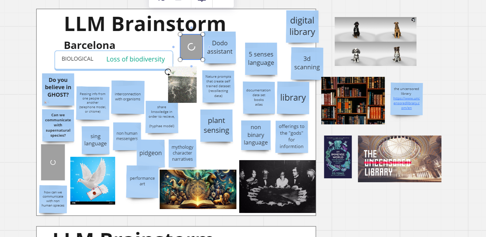

Go Back Term2

Video: Fair Future(s) | Designing with Collective Intelligence
Henry Cooke Research: "Things are not normal"
Henry Cooke: Profile
"Overlaying everything is a sense that the mental models which we have previously used to understand the world are no longer sufficient"
Things are more complex and interconnected, and we perceive them differently because of technology (Louisa Heinrich).
"Complexity isn't a new phenomenon." "Information overload" was popularized by the futurist Alvin Toffler in his 1970 book "Future Shock," examining "the choking sense of complexity about contemporary life."
"Climate change is the most important driver for the foreseeable future and will affect everything and everybody on Earth. However, we continue to develop and deploy technology as if the consequences will affect somebody else."
"Everything that anyone is doing anywhere in the world will be harder because of climate change. So everything is going to be tougher. Everything that's already tough is going to be tougher." (Alice Bell, Wellcome)
It would be one in a state of climate catastrophe unless things changed substantially now.
Innovation cannot happen without understanding how it will impact our planet, and, whether we like it or not, the climate crisis will force us to re-think how we build and deploy emerging technologies.
"Narrow window of opportunity is still open, but there’s not one second to waste."
All organizations will be forced to confront the reality of climate change one way or another. This presents opportunities, whether by reducing costs, increasing efficiency, or demonstrating values to younger audiences who increasingly see this as a critical issue.
Shifting global systems
A lot of the assumptions that underpin doing business as a global media company are likely to be challenged in the coming years. Economic power is shifting away from Europe and North America — China is projected to be the world’s largest economy by 2030, and most economic growth will be happening in the global south. Meanwhile, Europe faces problems caused by slowing growth, rising inequality, and ageing populations. It's unlikely we'll be able to continue to rely on the globalized systems of trade and culture that we've come to take for granted — at least, not in the same way.
Rates of inequality are rising, and there is a risk that the benefits of innovation will accrue primarily to a privileged few. According to an EU commission report, by 2030 the top 1% of the world's population will own two-thirds of the wealth, compared to the half that it owns today. Public bodies have a role to play in enabling level access to technology, whether it is through programme making, education, public campaigns or contributing to the development of robust, universal digital distribution and infrastructure.
Many of our interviewees feel that the world is becoming more divided and polarized, at the same time as social media is fragmenting and disinformation spreading. That those born between the mid-1990s and the mid-2010s, when most current technologies were already established, had a different perspective from older people that made communication harder.
A 10-year wormhole into the future.
Generative AI and Large Language Models are probably the most significant developments in artificial intelligence in recent memory.
Machine learning models as powerful enablers for process automation in organizations — and research suggests that combining them into “super systems” could create even more capable systems (Azeem Azhar, Exponential View). As LLMs, chatbots, and instances of these models connect to other systems on the internet, a new complex system arises. This has led to the excitement around AutoGPT projects. These connect GPT systems to other LLMs and APIs to coordinate tasks and execute them in a more generalized way among the connected systems. This dramatically expands the capabilities of these systems and creates a “super system” that can perform a broader range of tasks.
There are people on Discords that are building better models than Open AI is, right? Because they're just like: we care about this so much. We're reading all the papers. The innovation level there is amazing. Through the roof. (Brian Whitman)
"I do think there's something about the switch from numerical binary to approximate and negotiatory with the thing that we're interacting with. We're going to get a lot less empirical in the way that we deal with technology." (Nick Foster)
Modality is changing. The modality of how we access content is changing. (Renuka Gupta, BBC)
Smart home technology could be coming back around, boosted by recent developments in AI. Sensor-augmented environments, both at home and in the wider world, could provide new ways to interact with information and entertainment in physical spaces, and links to ideas about spatial computing and augmented reality.
Metaverse and VR, but we're excited about the possibilities of AR and spatial computing.
You can imagine the sales pitch: we see a mountain. We see a lake. Then the voiceover goes, "The real world is great, but let's make it better," and we see marker points overlaid in AR, or the route to the top. (Spencer Marsden, BBC)
"Preferable futures are possible if we take action to bring them about. Hope just means another world might be possible, not promise, not guaranteed. Hope calls for action, action is impossible without hope." (Rebecca Solnit, Hope in the Dark)
The Digital Sublime: Myth, Power, and Cyberspace - Digital sublime, myth power, and cyberspace
Afrofuturism by Ytasha L. Womack
Futur Ancestral Technologies by Cannupa
Kimberly Drew - Black Futures
We All Be Sick
Adrienne Maree Brown
Katherine May
Benefits for the future? Who will have these benefits?
Magic is an essential part of human life.
Magic, like tech, can help or harm, to expand beyond technology.
Can we be magic in our relationship with geography? Biology?
Can economic equality be magic?
In the context of cryptocurrencies and blockchain, a "token" is a digital unit that represents an asset or value on a network. Tokens can represent a variety of assets, from cryptocurrencies to unique digital assets.
The term "non-fungible" means that each token is unique and not interchangeable with another in the same way as a common currency. Each NFT has unique attributes and properties that distinguish it from others.
Smart contracts involve encoding clauses into source code in a manner that is automatically self-enforced and executed without the need for a central authority. The code is the law, and rules are embedded in the code.
A decentralized ledger that keeps a record of transactions and financial events. The blockchain is transparent, collaborative, shared, open, immutable, and verifiable. It is not a digital letter but a distributed and decentralized ledger.
Organizations with rules encoded in smart contracts, managing funds and governance models. Examples include Gitcoin, Uniswap, DeepDAO, and Bored Ape Yacht Club.
A governance model involving community boundaries, rules adapted to local conditions, participatory decision-making, monitoring through smart contracts, graduated sanctions, conflict resolution mechanisms, recognition by higher authorities, and multiple layers of nested enterprises.
Focusing on the sustainability of the planet.
An economic model ensuring that everyone can participate.
DAFNE+ uses progressive fees to promote a fair marketplace for creators. These fees are later redistributed to the creators' community and used for platform maintenance.
Survey Link: DAFNE+ Survey
Large Language Models (LLM) are often referred to as 'GLM' or 'GPT' (Generative Pre-trained Transformer). They are deep learning algorithms used for translation, prediction, and generation.
Created for doing things more efficiently, filling cabinets were introduced to organize information in books and folders, emphasizing granular certainty and standardization.
In our modern information environment, designed for clarity and efficiency, misinformation and midinformation became prevalent. Midinformation refers to informational ambiguity based on scant or conflicting evidence, often about emerging scientific knowledge.
1. Identify the subterm
2. Identify information model
3. Describe how the interaction might be different
Challenge Brainstorming: Loss of Biodiversity
Comments from Mina:
To practice the honorable harvest with Ever, Flora, Vania, Anna, Dudu, Albert, Anthu, and Jorge.
Challenge: Destruction of ecosystems leading to loss of biodiversity
Solution: Give legal rights to non-human beings focusing on ecosystems